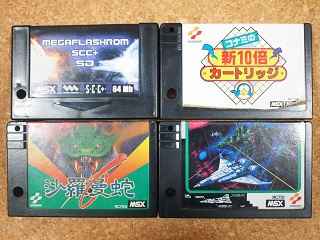

サラグラ 再び
MegaFlashROM SCC+ SD自体は以前よりMSX Cartridge Shopさんにて販売されています。付属ツール（OPFXSD.COM）がアップデートされました。日本語マニュアルがあるので細かい説明は省きますが、V1.16以降で新10倍＋サラグラが一つのカートリッジでサポートできるようになったようです。

サラグラというのは、沙羅曼陀（サラマンダ）＋グラディウス２の略です。有名な裏技（？）ですが、沙羅曼陀は別スロットにグラディウス２が無いと真のエンディングにたどり着けないそうです。そもそも私がたどり着けるエンディングは自機が全滅するものだけなのですが(^-^;
それならば挿せばいいだけじゃん、と言われそうですが、そうなると拡張スロットが無い環境では新10倍カートリッジが使用できません。ＯＫＥＩさんのサイトでは、以前より似非SCCに沙羅曼陀とグラディウス２をインストールするプログラム（SALAGRA.COM）や、似非SCCに対して新10倍と複数のゲームをインストールするプログラム（KNM-INST.COMとSHIN-10.COM）を公開していました。ただし、沙羅曼陀のグラディウス２検索ルーチンには、拡張スロット番号を正しく得られないという問題があり、後者のプログラムではサラグラが出来ません（似非SCCに新10倍と沙羅曼陀を入れ、別スロットにグラディウス２を挿せば済むのかも知れませんが、まぁ、それはさておき）。また、それらのプログラムはMegaFlashROM SCC+ SDには対応していませんでした。
今回、ＯＫＥＩさんがMegaFlashROM SCC+ SD用のパッチプログラムを作って下さり、また、ここで公開する事を了解して下さりました。
MegaFlashROM SCC+ SD対応新１０倍パッチ
SHIN-10.COMでは新10倍カートリッジのイメージにMegaFlashROM SCC+ SDで動作させるためのパッチをあてます。
SALAMAND.COMでは沙羅曼陀のグラディウス２検索ルーチンを修正します。
MegaFlashROM SCC+ SD用ではありますが、似非SCCでも使えます。実際のインストールはMegaFlashROM SCC+ SDの場合はOPFXSD.COM、似非SCCの場合はKNM-INST.COMを使います。サラグラに限らず、グラディウス＋ツインビー等にも使えます。組み合わせについてはBlueMSXのKonami rom combinationsに詳しく載っていますが、MegaFlashROM SCC+ SDや似非SCCでも動作するかは検証していません。沙羅曼陀のような問題が無いとは限りません。
ロジカルな動作としては、MegaFlashROM SCC+ SD内で擬似的に拡張スロットを作成して最大4本までのゲームをインストールするものです。実際には、以前からMegaFlashROM SCC+ SDでも本機能をサポートしていました。ただし、512kBメモリマッパ（オプション）搭載版では、512kBのメモリマッパがDisableにならない問題があり、うまく動作していませんでした。OPFXSD.COM（V1.16以降）で修正パッチがあてられます。また、新10倍カートリッジや沙羅曼陀にあてるパッチプログラムも存在しておらず、今回、ＯＫＥＩさんが作成して下さったことで、ようやく日の目を見ることになりました。
お約束ですが、このパッチを使用してデータ消失、故障やその他問題が発生した場合でも、ＯＫＥＩさん及びれふてぃは一切の責任は負いません。各自の責任において事前にデータが壊れても構わない環境にて十分にテストした上で使用することをおすすめします。